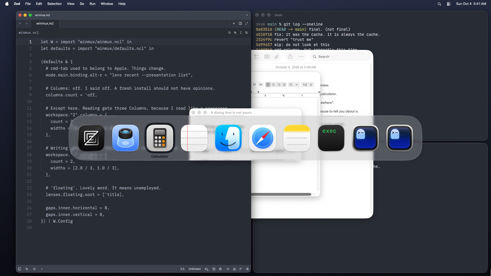
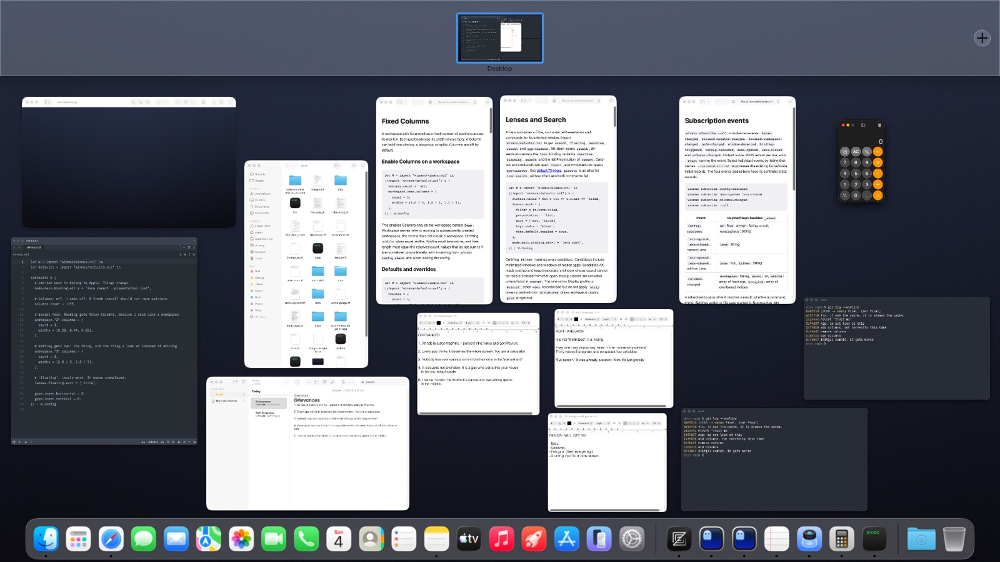
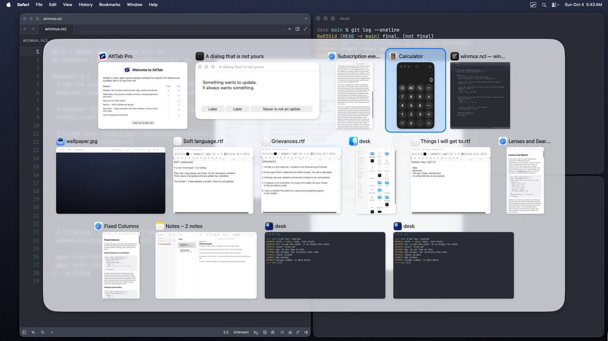
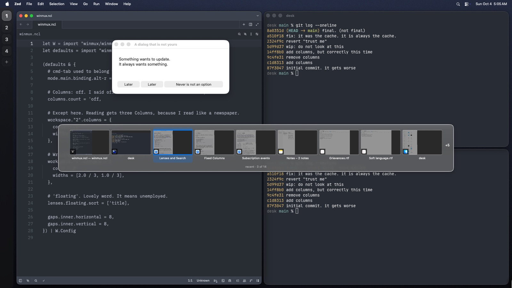
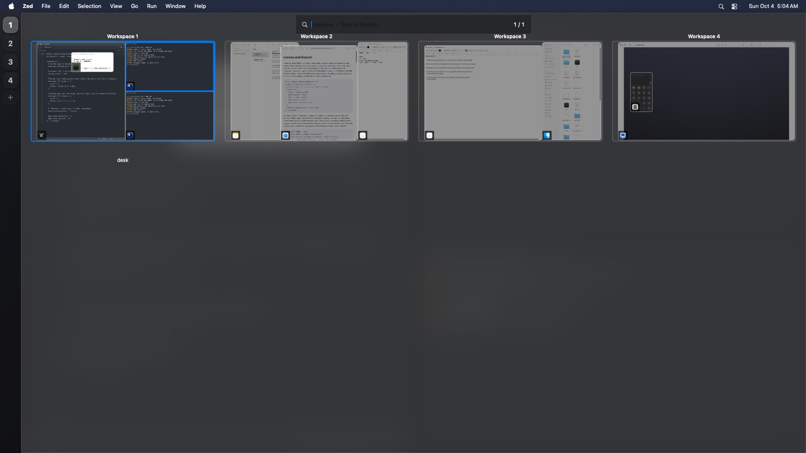
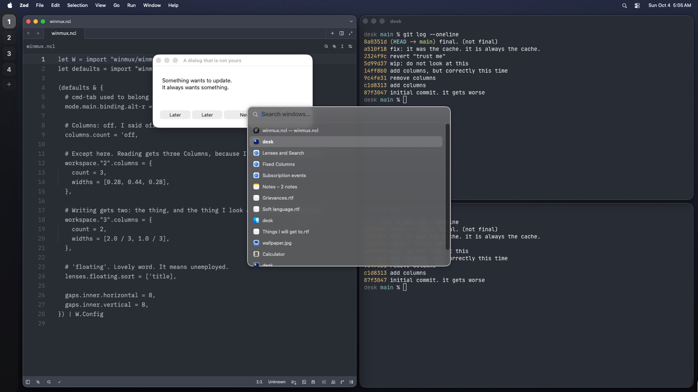
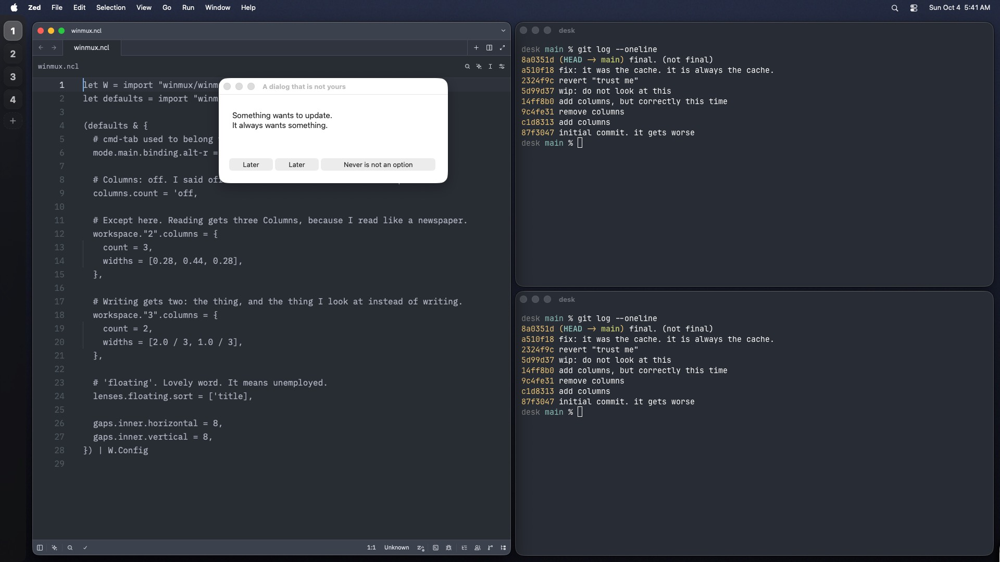

One tile, four layouts
The same fourteen-window desk, shown by the three switchers you already know and by WinMux today. Below them is a working prototype of the proposed look. Its switches set the tile once and every layout follows.
The same desk in each switcher
Every picture here is a real capture from one guest at 1920 × 1080, with the same windows open. Click a picture to enlarge it. App Exposé would not open from a script in the guest, so it is missing.

Native Cmd-Tab
macOS 26, held open- Instant to read. Ten icons at one size, one label, under the selected icon only.
- The bar is as wide as its contents and no wider.
- Apps, not windows. Three Safari windows are one icon, two TextEdit drafts are one icon.
- Nothing says where anything is.

Mission Control
macOS 26, without WinMux running- No panel at all. The windows are the interface, at their real shapes, as large as the screen allows.
- Roughly keeps left things left and right things right.
- No titles until you hover, so two terminals or two drafts are a guess.
- No keyboard selection, no search, no grouping. Mouse only.

AltTab
current release, default settings, its own welcome window included- Icon and title above every picture, so nothing is a guess.
- One height per row and each window's real shape. No dead space in a tile.
- Rows centre, the panel fills most of the screen, the selection is a ring on a tinted plate.
- One flat list. No grouping by workspace or app, and no sense of place.
- A small window is drawn at full size beside shrunken large ones: the dialog is wider than Zed.

WinMux today: the strip
fork at f438e690- Windows, in recency order, with titles.
- Every cell is one fixed box, so narrow windows leave half of it empty.
- Never grows. Nine cells at most, then "+5".
- Titles in 11-point text, pictures too small to read.

WinMux today: overview
fork at f438e690- The only one of the five that shows where a window lives: workspace, Column, position.
- Four workspaces use the top sixth of the screen. The rest is empty.
- A tab group draws as one window.

WinMux today: the list
fork at f438e690- Fast to type into, and every window is there.
- Text only, one size, no workspace, no grouping. Two rows both say "desk".
Others, from memory and not captured
| App | What it shows | Worth taking |
|---|---|---|
| Windows 11 Alt-Tab | Same-height thumbnails in rows, icon and title above each. | It is where AltTab's tile comes from. Confirms the card. |
| Contexts | A text list of windows grouped by app, with search and a number per row. | Grouped text rows, and a digit that jumps straight to a row. |
| Witch | Text menus: windows under their apps, tabs under their windows. | Tabs as entries. That is issue #48, and the tile should have room for it. |
| Raycast Switch Windows | A search list with app icon, title and app name. | The matched text highlighted as you type. |
| GNOME Activities | Windows spread out as in Mission Control, with a workspace strip and search in one screen. | Spread, workspaces and search composed in one view, which is what Lenses already model. |
The proposal, working
Tile settings apply to every layout. Change the layout and the same tiles move. Hover a tile for its window controls.
Click the desk first, then: arrow keys move the selection, Space zooms the selected window to its real size and place and Space again puts it back, hold Option shows the hints, and G changes the grouping.

Settled in round 1
Lift for the selection. The card as the default tile. Real size in the grid. Sections flow by default, and each Presentation takes its own arrangement in the config. Tiles shrink to fit; paging comes later. Grouping is by workspace by default, set in the config, and changed while the Lens is open from the control above the panel.